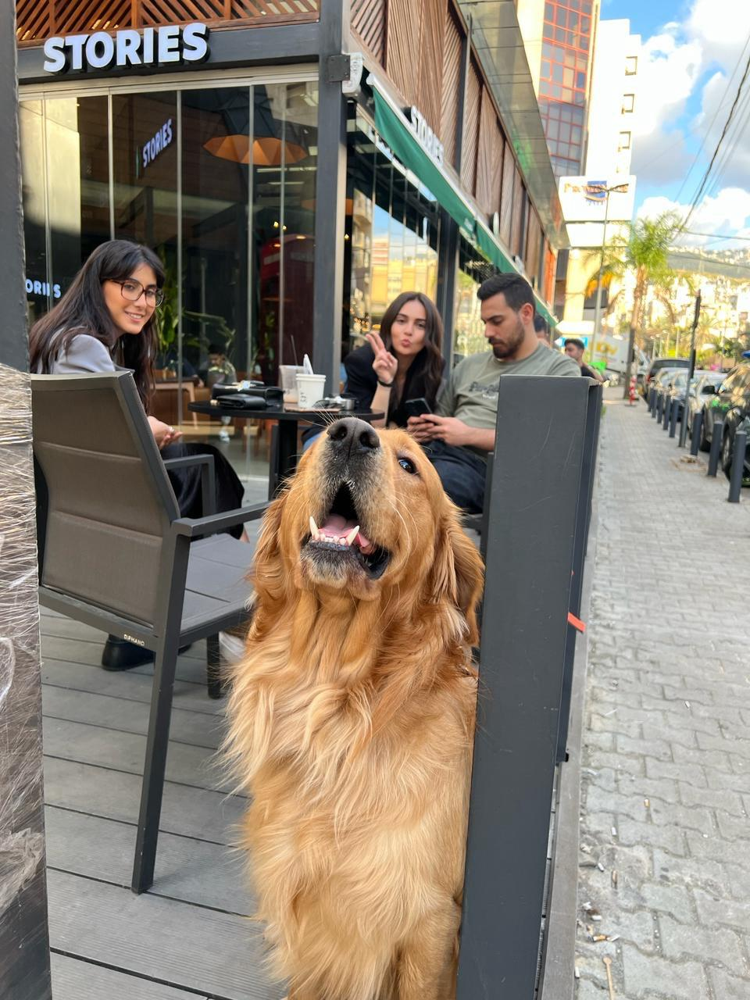

Yellow is my golden retriever, and here are some memories of his life stages. Enjoy the journey from puppyhood to adulthood!
Yellow as a playful and energetic puppy!
Yellow in his teenage years, full of energy and curiosity.
Yellow as a young adult, strong and active.
Yellow as a full-grown adult, calm and wise.
Disclaimer: This document is for educational purposes only. All information presented is based on research from credible sources and does not serve as professional advice.